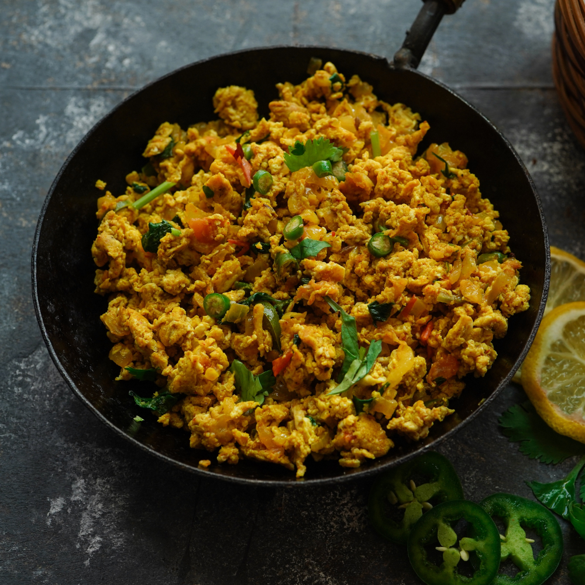

Dhaba Style anda Bhurji

Description
Egg bhurji, also known as Anda Bhurji or Ande ka Khagina, is a scrambled eggs dish which is a popular street food and a breakfast, lunch or dinner recipe. Originating from the Indian subcontinent, it is sometimes compared with the Parsi dish akuri. The Parsi dish Akoori or Akuri is very similar to egg bhurji with a few differences. Just like bhurji, akuri is filled with many aromatics like ginger, onion and other spices. However, bhurji eggs are cooked until dry, whereas akoori eggs are cooked less while still runny.
The difference lies in its preparation and addition of sautéed chopped onions, chilies and optional spices.[1] in this recipe we'll be making dhaba style anda bhurji which is
Anda bhurji but better
Ingredients
- Raw eggs-2
- Boiled eggs, grated- 4
- Turmeric Powder- 1/4 tsp
- Kashmiri Chilli Powder- 2 tsp
- Coriander Powder- 1/2 tsp
- Cumin Powder-1/2 tsp
- Garam Masala Powder- 1/2 tsp
- Onions, chopped- 2 medium (150 gms)
- Garlic, fine chopped- 2 tsp ( 6-8 cloves)
- Green chillies, fine chopped- 4
- Tomatoes, chopped- 180 gms
- Coriander leaves, chopped- 6-8 tbsp
- Oil- 2 tbsp
- Butter- 2+2 tbsp
Steps
- Prepare batter:Heat oil & 2 tbsp butter in a frying pan/tawa and add the fine chopped onions. Mix and fry on medium heat for 2 mins.
- Add spices:Now add the fine chopped garlic and green chillies, mix and fry on medium heat for another 3 mins till the onions are soft & translucent.
- Add vegetables:Now add the fine chopped tomatoes and mix & fry on medium heat for around 2 mins. Add all the spice powders other than garam masala powder.
Also add 1 tsp salt. Give a mix and fry on medium heat for 3-4 mins till the tomatoes are pulpy.
Add 2-3 tbsp of coriander leaves and give a mix, fry for a minute.
- Make pulp:Now use a masher to mash the gravy into a pulp.
Also add 2-3 tbsp water, mix and make the gravy pulpy.
- Add eggs:Now break 2 raw eggs in the gravy and mix the raw eggs into the gravy.
- Cook:Mix and cook for 2 mins.Give a mix and cook for 2-3 mins till everything is combined.
- Serve:Serve with roti or naan.